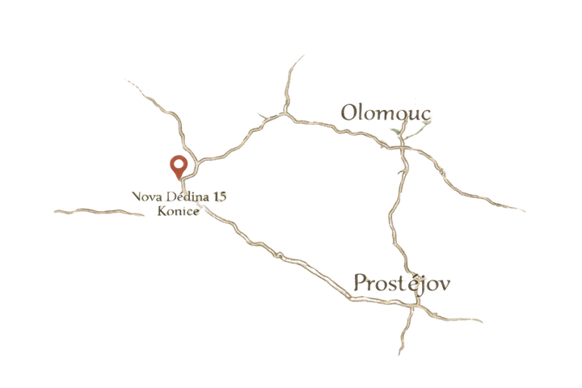
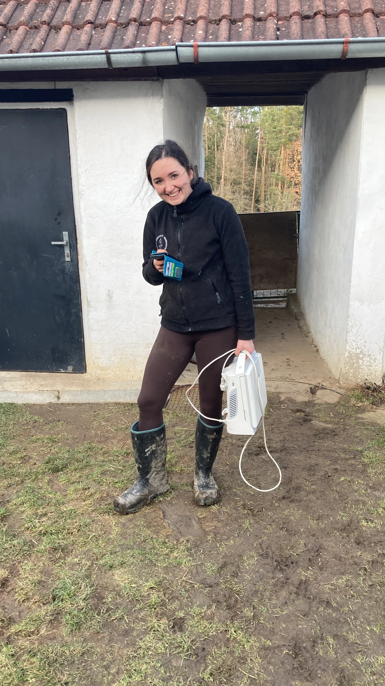
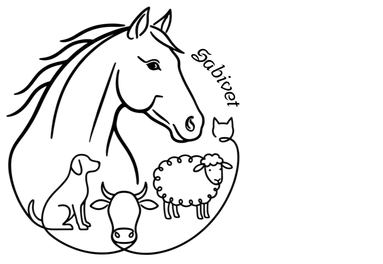

Kontakt
+420 723 904 728
sabivet@seznam.cz
Nová Dědina 15, Konice
výjezdy po celé ČR
cestovné 15 Kč/km

Pokud Vám náhodou nevezmu telefon, pravděpodobně se zrovna věnuji jinému pacientovi. Jakmile to bude možné, ozvu se Vám zpět. Můžete mi napsat zprávu se stručnou informací, jak Vám mohu pomoci.

